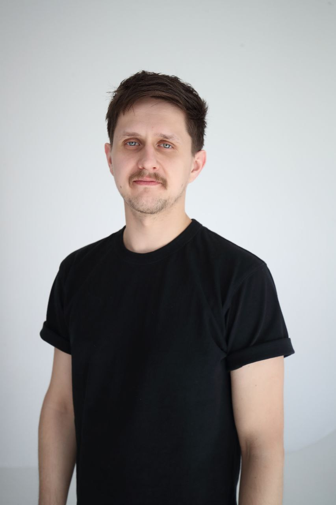

Senior Frontend Engineer
kocherga0412@gmail.com
+34 627 451 699
Bilbao, Spain (open to remote / relocation)
Frontend Developer → Senior Frontend Engineer & Tech Lead at Severstal
Mar, 2021 - Jun, 2026
Long-term work on internal enterprise software for one of the world's largest industrial companies. Progressed from Junior → Middle → Senior / Tech Lead. Led the frontend team (grew from 2 to 3 engineers) on a greenfield product — owned the frontend architecture and tooling/infrastructure setup, and partnered with a separate C#/.NET backend team on API design and integration. Built step-by-step defect visualization tools powered by smart-vision data and virtual tours of production facilities. Refactored legacy React codebases and migrated to modern state managers (Redux Toolkit, Reatom) and build tooling (Vite), achieving a ~35% performance improvement. Designed scalable, modular architectural patterns that reduced incidents and accelerated release cycles, built a design-token-based UI kit, and delivered the admin panel for a VR-based training platform. During the first two years worked across the full stack (React + Node.js/Express/TypeORM).
Frontend stack:
Backend stack:
Frontend Developer (Contract) at 3D Vehicle Inspection Platform
2022
External contract project for an automotive service, built by a two-person engineering team. Developed a React application for full 360° / 3D inspection of vehicles, with step-by-step defect visualization and annotation. Implemented the complete viewing, rendering, editing, and administration logic for the service.
Tech stack:
Instructor, Web Development at SberUniversity
2022
Taught hands-on courses on HTML, CSS, and JavaScript fundamentals.
Tech stack:
Frontend Developer at Standard Data
Sep, 2020 - Mar, 2021
Contributed to the frontend development of an e-learning platform — a web product for delivering online courses and training. Built and maintained reusable UI components and a shared design system to streamline development across the product. Collaborated with external design contractors to ensure high-quality delivery.
Tech stack:
Frontend Developer at Freelance
Feb, 2020 - Sep, 2020
Built websites and landing pages (JavaScript / HTML / CSS) and maintained PHP-based sites for small businesses and startups. Handled client communication and worked with collaborators (designers, content writers) to deliver projects end-to-end. Established basic project workflows, QA routines, and version-control processes for non-technical clients.
Tech stack:
React
TypeScript
Redux Toolkit
Reatom
MobX
Next.js
Apollo Client
HTML5 & CSS3
TailwindCSS
Material UI
Ant Design
Node.js
Express
GraphQL
REST API
PostgreSQL
MongoDB
TypeORM
Git
GitHub Actions / CI/CD
Docker
Vite
Agile/Scrum
Jira
Figma
Elbrus Bootcamp — Full-stack Developer (intensive program), 2020 · St. Petersburg, Russia
Ural State Technical University — Bachelor's Degree, 2010 – 2014 · Ekaterinburg, Russia
Russian: Native
English: Intermediate (B1)
References available upon request
Playing the guitar.
Cooking.
Extreme sports.